El sábado, hora por hora
Tocá cada momento para verlo completo.
Llegada a la chacraBienvenida
Te recibimos en la entrada, con la neblina de la mañana todavía sobre la laguna. Cuatro prácticas, comida de estación, «Carlos Perciavalle: anécdotas del Paraíso» y un fogón con música en vivo y violín: el día entero está pensado para que no tengas que mirar el reloj. ¿infusión de bienvenida?
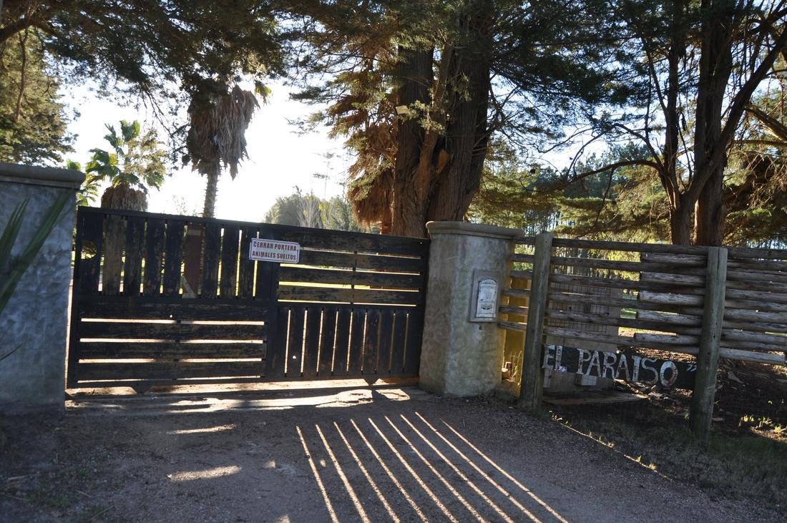
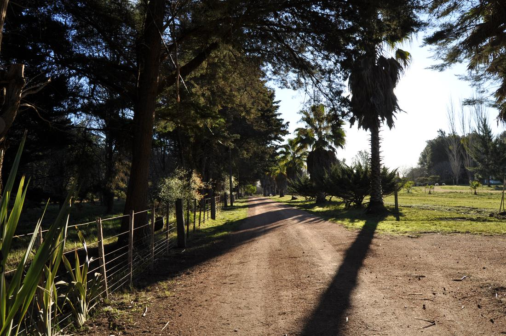
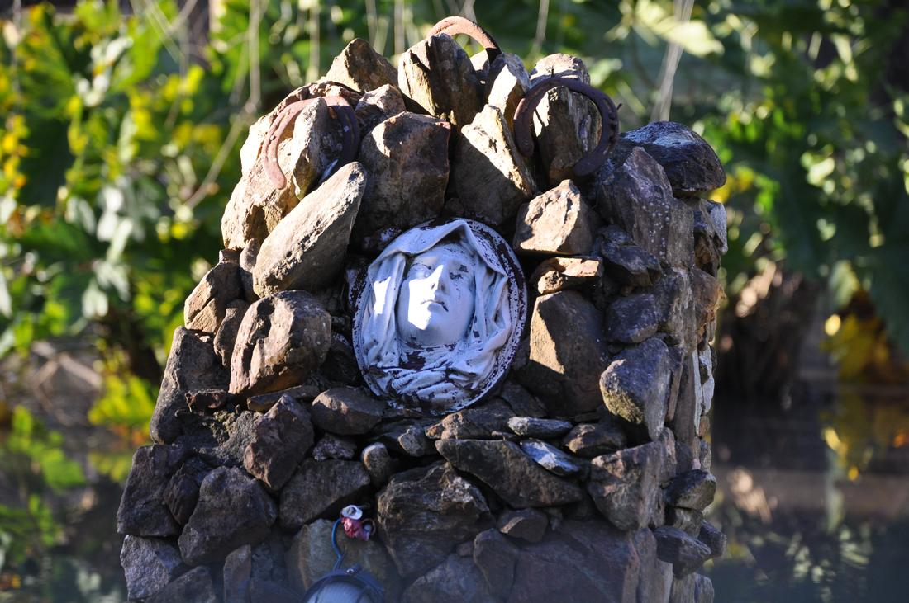
Pilatescon Maca Caeiro
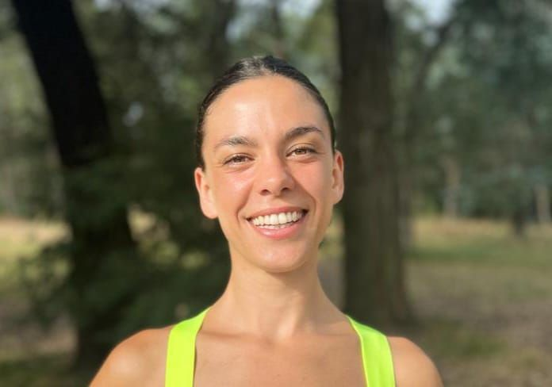
“Encontré en el método Pilates una manera completa de mantenerme en forma física, mental y emocionalmente.”
Hace 15 años que me dedico a trabajar y a estudiar el movimiento físico. Elegí enfocarme en el método Pilates porque encontré en él una manera completa de mantenerme en forma física, mental y emocionalmente.
A mis 16 años comencé a practicar acrobacias en telas y pocos años después tuve grupos a mi cargo. Durante 10 años acompañé procesos grupales de esta modalidad para niños y adultos. A la par, siempre entrené desde el método Pilates para mantenerme fuerte, con la flexibilidad y la movilidad necesarias para practicar las acrobacias aéreas.
También soy entrenadora personal: hace 10 años que comencé a estudiar y a sostener procesos de forma individual y en grupos reducidos. Hoy en día me dedico profesionalmente a esto último, en grupos reducidos y de forma individual, mayoritariamente desde el método Pilates. Aunque también me gusta estudiar y aprender siempre cosas nuevas, y desde ese lugar ir enriqueciendo mis propuestas.
Baño de gongcon Vero Sosa
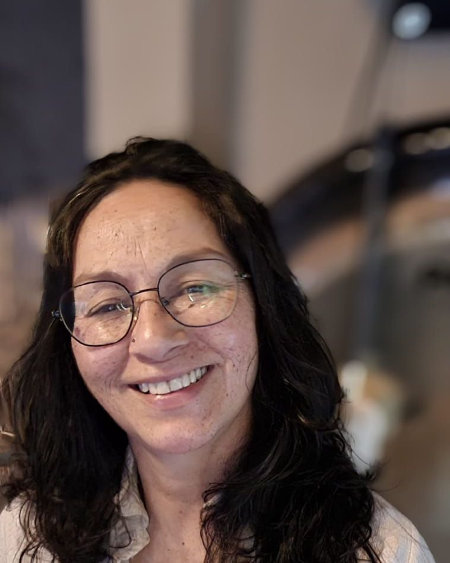
Un viaje hacia el interior.
¿En qué consiste un baño de gong?
Es una experiencia de inmersión sonora en la que los sonidos y las vibraciones del gong envuelven el cuerpo y la mente, invitándonos a soltar las tensiones, aquietar los pensamientos y conectar con el momento presente. Solo es necesario entregarse a la escucha y permitirse recibir.
Beneficios
- Favorece la relajación profunda.
- Ayuda a disminuir el estrés y la tensión.
- Invita a aquietar la mente y descansar.
- Promueve la conexión con el cuerpo y la respiración.
- Abre un espacio de introspección, armonía y bienestar interior.
Mi camino como terapeuta
Como Terapeuta de Sonido y Facilitadora de Gong, siento que mi propósito es crear espacios donde el sonido se convierta en un puente hacia el interior de cada persona.
A través de la vibración, acompaño experiencias de relajación, presencia y conexión personal, desde el respeto por el proceso y la vivencia única de cada ser.
Para mí, tocar el gong es mucho más que producir sonido: es compartir una vibración que nos invita a detenernos, escucharnos y recordar la conexión con nuestra esencia.
Almuerzo y tiempo libreRaízCo Experiencias · caminata a la laguna
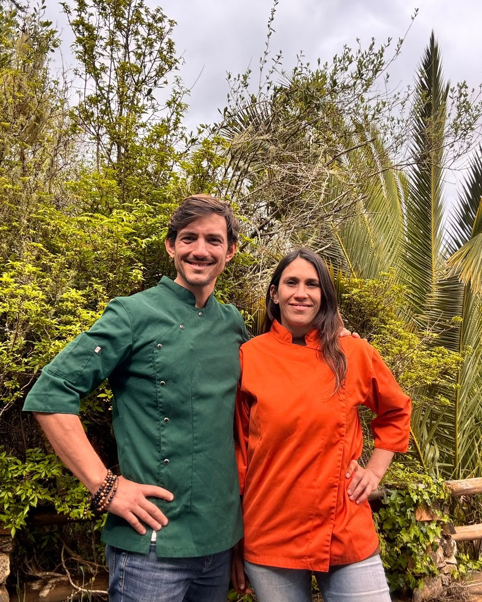
Cocina de estación de RaízCo Experiencias, Matías Amadasi y Agustina Francia. Producto local, sin ultraprocesados, adaptable a distintas necesidades: avisanos al reservar.
Para compartir
- Bruschettas con hummus y ratatouille
- Albóndigas de quinoa con salsa tahini
- Brochetas de cherry, mozzarella y albahaca
- Sándwiches de focaccia con cherry, rúcula y romero
- Panes de masa madre de harina biodinámica
- Crackers de semillas vivas
- Hummus de la huerta
- Chucrut casero y pickles de estación
Para tomar
- Agua de menta, limón y jengibre
- Kéfir saborizado
pedirles fotos de los platos · buddha bowl de quinoa y habas a confirmar por RaízCo
Después de comer, tiempo libre para recorrer El Paraíso, la chacra de Carlos Perciavalle, hasta la orilla de la laguna. Yoga empieza a las 14:30, con la comida ya asentada.
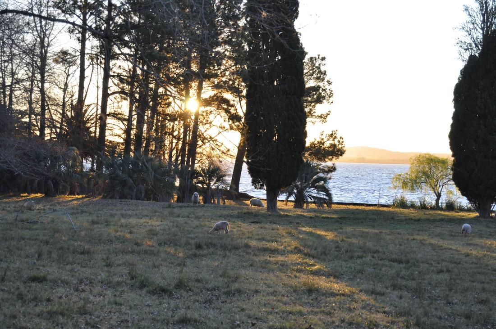
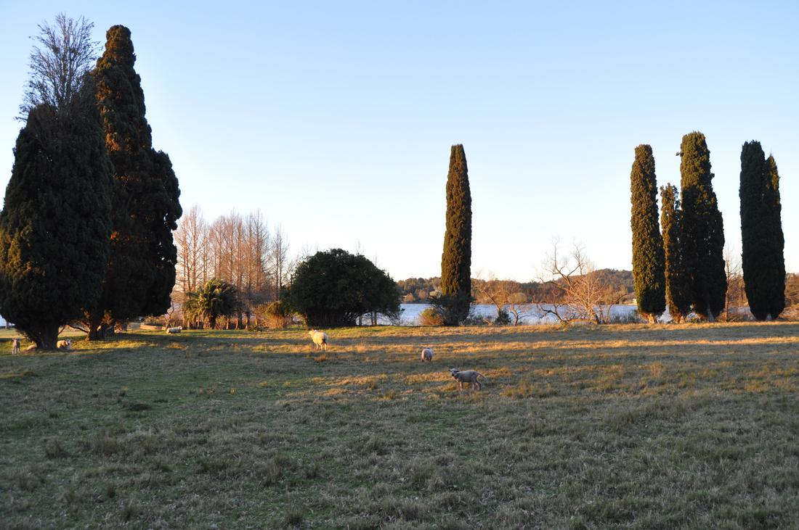
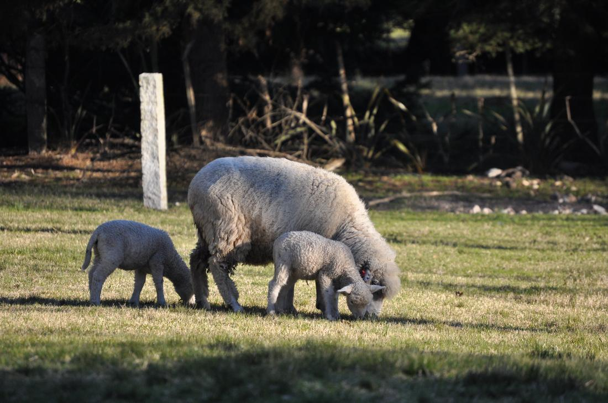
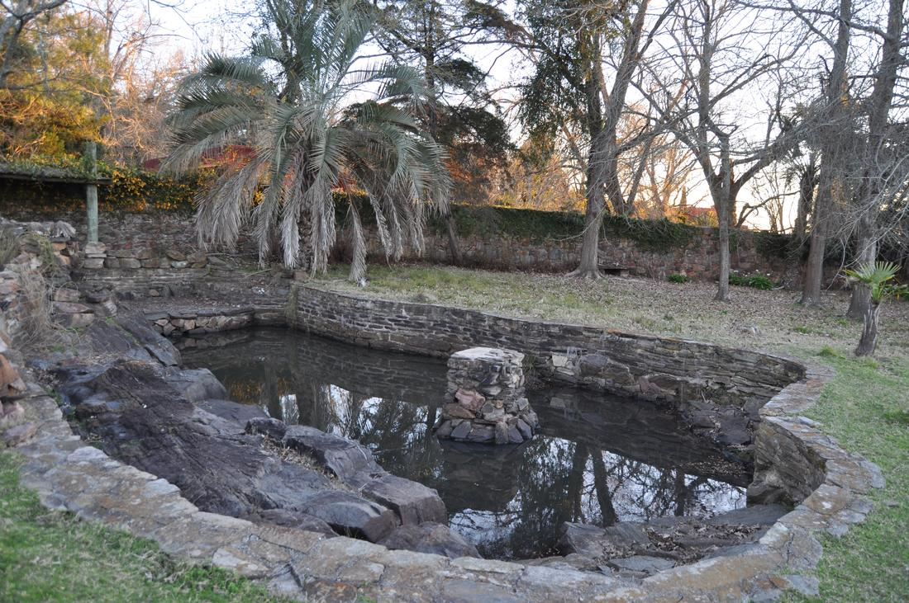
Yogacon Susana Ameglio
“Enseñar yoga es regalar un momento de pausa, presencia y conexión.”
Soy Susana Ameglio, apasionada por la naturaleza, el aprendizaje y el autoconocimiento. Hace muchos años comencé a practicar yoga y, con el tiempo, dejó de ser solamente una práctica sobre el mat para convertirse en una parte esencial de mi vida cotidiana y de mi manera de relacionarme conmigo misma y con el mundo.
Creo en un estilo de vida consciente, donde el movimiento, la alimentación y el contacto con la naturaleza son herramientas que nos ayudan a sentirnos mejor y a vivir con mayor bienestar. Como health coach y profesora de yoga, busco integrar estos caminos y compartir lo que a mí me transforma y me hace bien.
Actualmente doy clases de yoga a grupos y también a personas de manera individual. Me encanta acompañar a cada persona en su propio proceso y compartir la belleza de esta práctica, que nos invita a conectar con el cuerpo, aquietar la mente y encontrar un espacio para nosotros mismos, en medio del ritmo de la vida cotidiana.
Para mí, enseñar yoga es mucho más que guiar una clase: es regalar un momento de pausa, presencia y conexión; una oportunidad para que cada persona se vaya sintiendo un poco mejor, más liviana y con otra energía para continuar su día.
Mi deseo es que esa sensación nos acompañe también fuera del mat, porque el verdadero valor del yoga se descubre cuando empezamos a llevarlo a nuestra vida.
Tai Chi y Qigongcon Camilo Sosa Garcia · Camino del Dragón
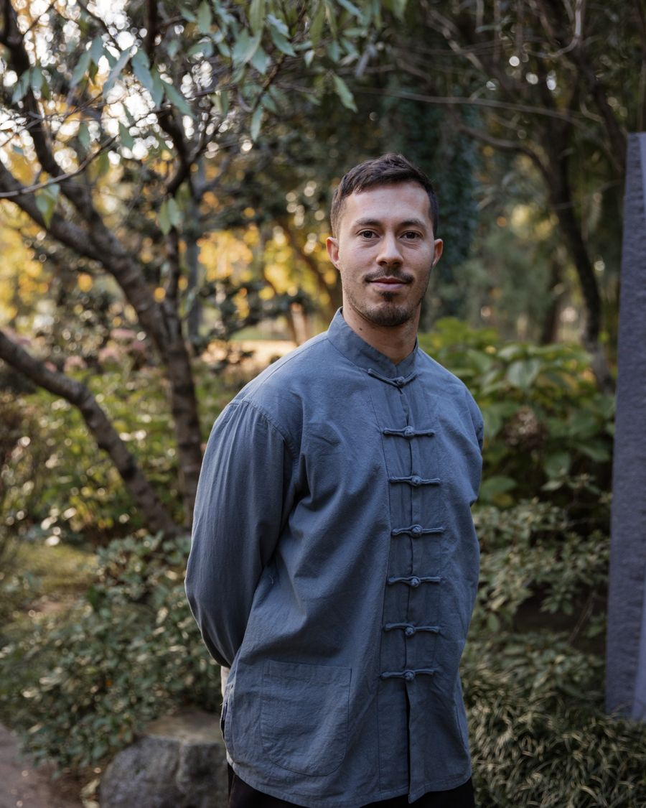
“Cada movimiento es una oportunidad para cultivar la presencia.”
Me dedico al estudio y la práctica de las artes internas chinas, especialmente el Tai Chi Chuan y el Qigong, disciplinas que integran el movimiento, la respiración, la atención y el cultivo de la energía.
Practico Tai Chi desde 2016 y, a lo largo de estos años, he profundizado en distintos aspectos de esta disciplina, especialmente en el estilo Yang y el estilo Chen, explorando tanto sus beneficios para la salud como sus fundamentos marciales.
También estudio y enseño Qigong y Dao Yin Yang Sheng Gong, prácticas orientadas al bienestar, la conciencia corporal y el equilibrio entre cuerpo y mente.
A través de mi proyecto Camino del Dragón, comparto estas disciplinas mediante clases grupales, prácticas individuales y encuentros dedicados al desarrollo integral de las personas.
Entiendo el Tai Chi como un camino de aprendizaje continuo, en el que cada movimiento es una oportunidad para cultivar la presencia, mejorar nuestra relación con el cuerpo y encontrar mayor equilibrio en la vida cotidiana.
Mi intención es acercar estas prácticas a personas de diferentes edades y niveles de experiencia, ofreciendo un espacio para conectar con uno mismo, desarrollar la vitalidad y descubrir los beneficios del movimiento consciente.
MeriendaRaízCo Experiencias
Mandala de frutas frescas y frutos secos, torta de manzana especiada, brownie de la tierra con mermelada de arándanos, trufas de dátiles y barritas de quinoa. Licuados hechos en el momento y té chai de la casa.
Carlos PerciavalleAnécdotas del Paraíso
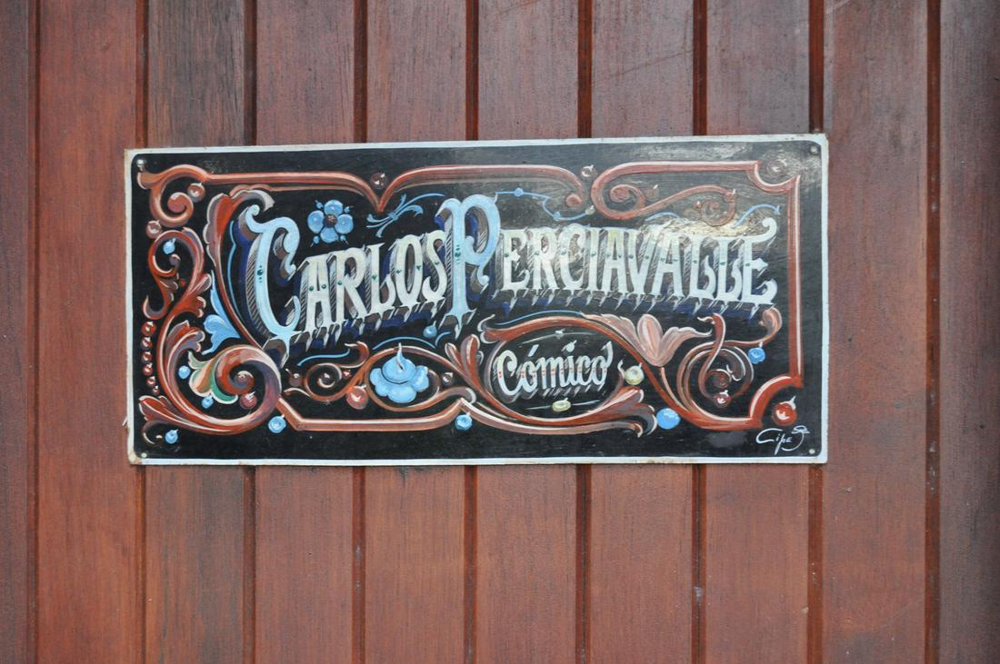
presentación de Carlos, en sus palabras
18:15 a 18:30 sin asignar
Fogón con violínMúsica en vivo
Cerramos el día alrededor del fuego, con una hora de música en vivo a cargo de un violín. nombres del dúo ¿se corre a 19:30–20:30 para la puesta de sol?